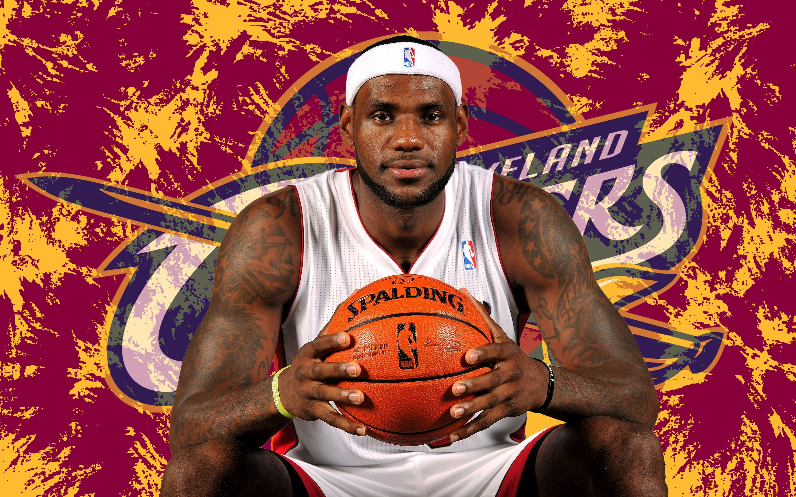

LeBron James iniciou sua carreira na NBA em 2003, quando foi selecionado pelo Cleveland Cavaliers como a primeira escolha do Draft. Natural de Akron, Ohio, ele chegou à equipe cercado de grandes expectativas e rapidamente se tornou o principal jogador da franquia. Durante seus primeiros anos, LeBron evoluiu de uma jovem promessa para uma das maiores estrelas da liga, assumindo cada vez mais responsabilidade dentro da equipe e levando os Cavaliers a novos patamares.
